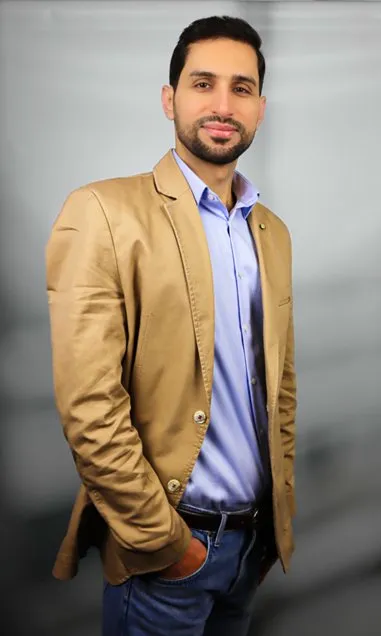

Omar Muhrat
Automation & Robotics Specialist
Engineering intelligent systems — from PLC automation to industrial robotics. Passionate about building the next generation of smart manufacturing solutions.

Engineer. Innovator. Problem-Solver.
I am a Mechatronics Engineer with a strong academic foundation — holding both a Bachelor's degree in Mechatronics and a Master's in Business Engineering (Energy) from TU Berlin. My professional journey spans automation, robotics, renewable energy, and IT consulting.
Currently, I am deepening my expertise through advanced IHK training in automation and robotics, with a focus on PLC programming (SPS), Python scripting for industrial applications, and simulation tools like KUKA Sim and Factory IO.
I thrive at the intersection of hardware and software — designing control systems, programming automation sequences, and bringing intelligent engineering solutions to life. I am actively seeking opportunities in industrial automation, robotics engineering, or smart manufacturing in Germany.
Core Competencies
Professional History
- Performed targeted module adjustments and system modifications on mainframe platforms, ensuring operational stability.
- Executed rigorous testing procedures and quality assurance protocols, identifying and resolving technical anomalies.
- Created precise technical documentation covering system changes, test results, and operational procedures.
- Led the development of a UAV (drone) material testing system — integrating sensors, electronics, and embedded control for structural analysis.
- Designed and implemented advanced control systems for precision motion and real-time monitoring of engineering parameters.
- Engineered EV wallbox charging infrastructure solutions, contributing to Germany's growing e-mobility ecosystem.
- Contributed to the design and analysis of photovoltaic (PV) systems, gaining hands-on experience in solar energy integration and performance optimization.
- Conducted research and policy analysis for renewable energy frameworks, assessing regulatory environments for clean energy deployment.
- Überwachung, Kontrolle und Wartung von Gas- und Dampfturbinen in einem zentralen Kraftwerk.
- Unterstützung des sicheren und effizienten Betriebs von Energieerzeugungsanlagen.
- Created precise technical documentation covering system changes, test results, and operational procedures.
Academic Background
Interdisciplinary programme combining engineering with business strategy and energy systems management. Focus on sustainable energy economics and industrial applications.
TU BerlinComprehensive programme covering mechanical systems, electronics, embedded programming, and control theory. Strong foundation in robotics and automation principles.
Al Baath UniversityIntensive professional programme covering PLC programming (SPS), Tia Portal for industrial applications, industrial robot programming, and KUKA simulation. Practical lab training with real automation hardware.
Engineering Projects
Communication Skills
Let's Work Together
I am currently open to new opportunities in industrial automation, robotics engineering, and mechatronics. Whether you have a project, a role, or simply want to connect — I would be glad to hear from you.
Ready to Engineer the Future?
I bring a rare combination of academic depth, hands-on engineering experience, and cross-sector versatility. Let's discuss how I can contribute to your team or project.
Send an Email